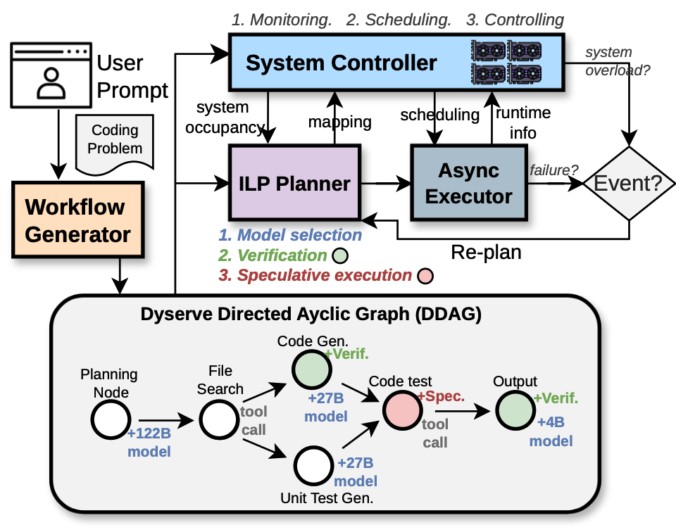
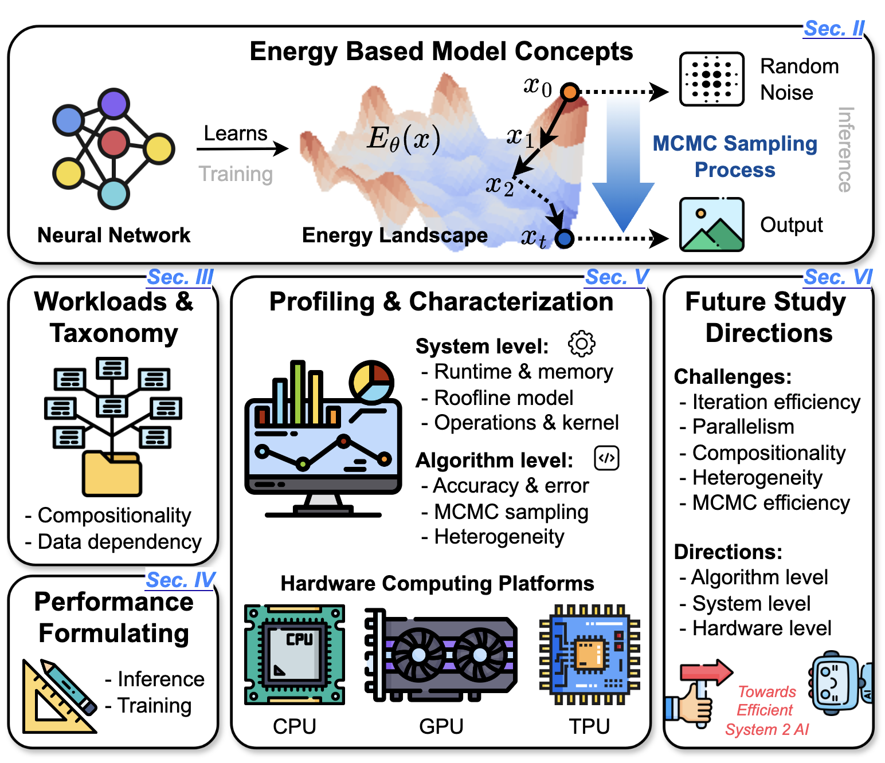

Sys/Arch for AI
Efficient Systems and Architectures for Emerging AI
System and architecture co-design for agentic, embodied, and neuro-symbolic AI: from serving and workload characterization to hardware acceleration.
Explore related workGeorgia Tech · Electrical & Computer Engineering
钱家熠 / ECE Ph.D. student
I work at the intersection of AI systems and computer architecture.
I'm a Ph.D. student at the Georgia Institute of Technology, working on efficient computing for emerging AI and AI-driven architecture and systems design.
Advised by Prof. Tushar Krishna and Prof. Zishen Wan .
Up next Incoming Student Researcher at Google · Fall 2026.

01 / Research interests
I study how to make emerging AI efficient, and how AI can help us design better computing systems.
System and architecture co-design for agentic, embodied, and neuro-symbolic AI: from serving and workload characterization to hardware acceleration.
Explore related workUsing AI to guide the design of computer architectures and systems, including agent-driven exploration of accelerator designs.
Explore related work02 / Background
Research, education, and industry.
Student Researcher
Hardware-Aware Neural Architecture Search
Mentor: Anish Prabhu
Ph.D. in Electrical and Computer Engineering
Advisors: Tushar Krishna and Zishen Wan
M.S. in Computer Science
Advisors: Yingyan (Celine) Lin and Tushar Krishna
B.S. in Electronic Information Science and Technology
Department of Electronic Engineering · Visual SLAM research with Prof. Gang Liu
Georgia Tech · System/architecture co-design for AI; AI for architecture and systems.
Mentors: Tushar Krishna and Zishen Wan
03 / Updates
04 / Publications & ongoing work


⭐ Selected as Industry-Academia Partnership (IAP) Highlight

🏆 Best Paper Award, DARPA SRC JUMP 2.0, 2025




Submission currently under review.
Under review · HPCA 2027 submission